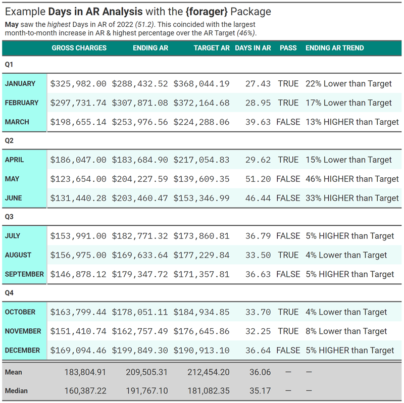
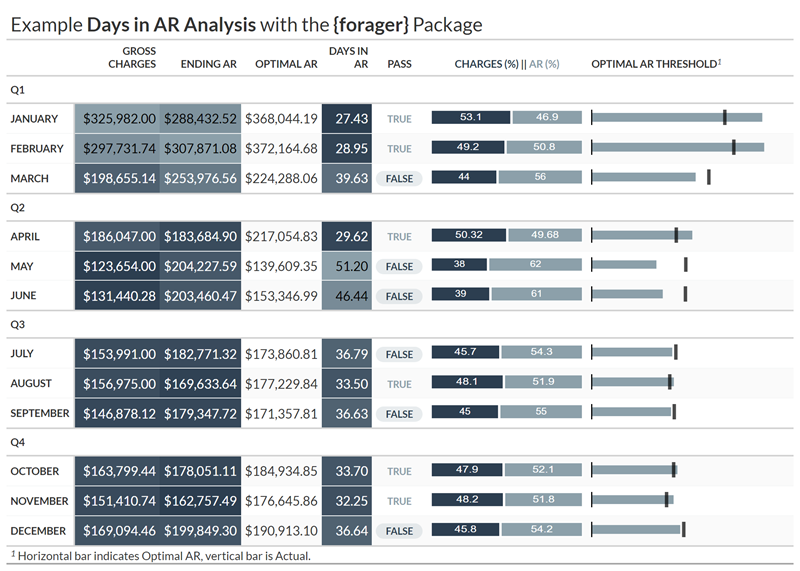
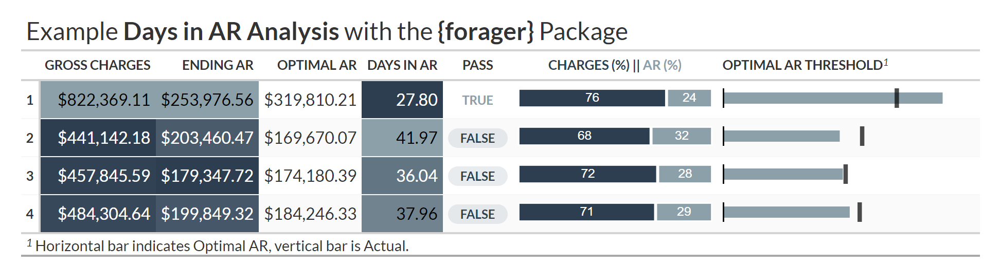

Forager (noun)
A person that goes from place to place searching for things that they can eat or use.1
Ager (noun)
A person that calls from place to place searching for payment before insurance can refuse.2
forager is a work-in-progress, the goal of which is to become a suite of integrated analytics tools focused on a comprehensive overview of a healthcare organization’s operational and financial performance areas. Build your own rule-based, automated reporting pipeline to monitor:
- Patient Scheduling
- Coding / Billing
- Productivity
- Collections & A/R
- Denial Management
Installation
You can install the development version of forager from GitHub with:
# install.packages("devtools")
devtools::install_github("andrewallenbruce/forager")
# install.packages("remotes")
remotes::install_github("andrewallenbruce/forager")Usage
Calculate:
- Provider Lag: Days between Date of Service (
dos) and Date of Release (dor) - Billing Lag: Days between Date of Release (
dor) and Date of Submission (dtos) - Acceptance Lag: Days between Date of Submission (
dtos) and Date of Acceptance (dtoa) - Payment Lag: Days between Date of Acceptance (
dtoa) and Date of Adjudication (dtad) - Days in AR: Days between Date of Release (
dor) and Date of Adjudication (dtad)
x <- forager::generate_data(1500)
x |> head(n = 25) |> gluedown::md_table()| claim_id | date_of_service | payer | ins_class | balance | date_of_release | date_of_submission | date_of_acceptance | date_of_adjudication |
|---|---|---|---|---|---|---|---|---|
| 0001 | 2021-11-17 | UnitedHealth | Primary | 70.388333 | 2021-12-05 | 2021-12-06 | 2021-12-09 | 2022-01-06 |
| 0002 | 2021-10-17 | Anthem | Secondary | 122.922100 | 2021-10-23 | 2021-10-24 | 2021-10-26 | 2021-11-29 |
| 0003 | 2021-11-17 | BCBS | Primary | 52.126833 | 2021-11-25 | 2021-11-30 | 2021-12-03 | 2022-01-06 |
| 0004 | 2021-11-17 | BCBS | Secondary | 222.780333 | 2021-11-28 | 2021-12-02 | 2021-12-06 | 2022-01-09 |
| 0005 | 2021-12-17 | Cigna | Secondary | 129.653067 | 2021-12-22 | 2021-12-22 | 2021-12-27 | 2022-01-23 |
| 0006 | 2021-04-17 | UnitedHealth | Primary | 189.284867 | 2021-04-26 | 2021-04-28 | 2021-05-01 | 2021-05-25 |
| 0007 | 2021-08-17 | Centene | Secondary | 283.762033 | 2021-08-27 | 2021-08-29 | 2021-08-31 | 2021-09-28 |
| 0008 | 2021-12-17 | Humana | Secondary | 255.133267 | 2021-12-28 | 2021-12-28 | 2022-01-01 | 2022-02-02 |
| 0009 | 2021-09-17 | Cigna | Secondary | 46.187100 | 2021-09-26 | 2021-09-30 | 2021-10-04 | 2021-11-08 |
| 0010 | 2021-08-17 | Medicaid | Secondary | 45.576500 | 2021-09-01 | 2021-09-04 | 2021-09-08 | 2021-10-09 |
| 0011 | 2021-09-17 | Medicaid | Primary | 255.383567 | 2021-09-28 | 2021-09-29 | 2021-10-01 | 2021-10-30 |
| 0012 | 2021-05-17 | Cigna | Primary | 30.562000 | 2021-05-25 | 2021-05-27 | 2021-06-01 | 2021-07-02 |
| 0013 | 2021-12-17 | Centene | Primary | 127.763433 | 2021-12-29 | 2022-01-01 | 2022-01-06 | 2022-02-11 |
| 0014 | 2021-09-17 | Centene | Primary | 210.469667 | 2021-09-23 | 2021-09-24 | 2021-09-27 | 2021-10-22 |
| 0015 | 2021-11-17 | Centene | Primary | 159.451000 | 2021-12-06 | 2021-12-07 | 2021-12-09 | 2022-01-10 |
| 0016 | 2021-05-17 | Medicaid | Secondary | 24.443300 | 2021-05-23 | 2021-05-26 | 2021-05-29 | 2021-06-25 |
| 0017 | 2021-09-17 | Medicare | Secondary | 213.815567 | 2021-09-27 | 2021-09-28 | 2021-10-01 | 2021-11-02 |
| 0018 | 2021-08-17 | Anthem | Secondary | 49.395933 | 2021-08-27 | 2021-08-27 | 2021-08-29 | 2021-09-29 |
| 0019 | 2021-02-17 | Medicare | Secondary | 110.553467 | 2021-02-25 | 2021-02-26 | 2021-03-02 | 2021-04-04 |
| 0020 | 2021-01-17 | Medicare | Primary | 145.577067 | 2021-01-24 | 2021-01-27 | 2021-01-31 | 2021-02-28 |
| 0021 | 2021-10-17 | Centene | Primary | 274.095933 | 2021-10-29 | 2021-10-31 | 2021-11-05 | 2021-12-13 |
| 0022 | 2021-11-17 | Medicaid | Secondary | 9.971367 | 2021-12-02 | 2021-12-05 | 2021-12-09 | 2022-01-11 |
| 0023 | 2021-03-17 | Cigna | Primary | 90.221467 | 2021-04-02 | 2021-04-03 | 2021-04-06 | 2021-05-04 |
| 0024 | 2021-02-17 | UnitedHealth | Primary | 128.741900 | 2021-03-01 | 2021-03-01 | 2021-03-05 | 2021-04-02 |
| 0025 | 2021-01-17 | BCBS | Primary | 4.893900 | 2021-02-04 | 2021-02-05 | 2021-02-05 | 2021-03-06 |
x |>
count_days(date_of_service, date_of_release, provider_lag) |>
count_days(date_of_release, date_of_submission, billing_lag) |>
count_days(date_of_submission, date_of_acceptance, processing_lag) |>
count_days(date_of_submission, date_of_adjudication, payer_lag) |>
count_days(date_of_release, date_of_adjudication, days_in_ar) |>
dplyr::group_by(month = clock::date_month_factor(date_of_service)) |>
dplyr::summarise(
no_of_claims = dplyr::n(),
balance_total = sum(balance),
avg_prov_lag = round(mean(provider_lag), 2),
avg_bill_lag = round(mean(billing_lag), 2),
avg_accept_lag = round(mean(processing_lag), 2),
avg_pay_lag = round(mean(payer_lag), 2),
avg_dar = round(mean(days_in_ar), 2), .groups = "drop") |>
gluedown::md_table()| month | no_of_claims | balance_total | avg_prov_lag | avg_bill_lag | avg_accept_lag | avg_pay_lag | avg_dar |
|---|---|---|---|---|---|---|---|
| January | 117 | 14825.76 | 10.48 | 2.18 | 3.03 | 33.17 | 35.35 |
| February | 124 | 16961.01 | 11.06 | 2.52 | 2.93 | 33.15 | 35.67 |
| March | 108 | 13545.11 | 10.60 | 2.49 | 3.04 | 33.09 | 35.58 |
| April | 121 | 16316.92 | 10.97 | 2.26 | 2.98 | 32.62 | 34.88 |
| May | 128 | 16181.76 | 10.59 | 2.37 | 3.20 | 32.89 | 35.26 |
| June | 125 | 17335.78 | 11.34 | 2.30 | 3.24 | 33.26 | 35.56 |
| July | 112 | 14732.81 | 11.23 | 1.91 | 3.19 | 33.24 | 35.15 |
| August | 135 | 19043.19 | 11.76 | 2.19 | 3.01 | 33.06 | 35.24 |
| September | 138 | 17807.07 | 10.95 | 2.39 | 3.35 | 33.12 | 35.51 |
| October | 123 | 16967.46 | 11.00 | 2.37 | 2.79 | 32.53 | 34.90 |
| November | 149 | 21304.80 | 12.20 | 2.32 | 2.76 | 32.70 | 35.02 |
| December | 120 | 16225.26 | 11.32 | 2.20 | 2.98 | 33.04 | 35.24 |
Aging Calculation
x |> forager::count_days(date_of_release,
date_of_adjudication,
days_in_ar) |>
dplyr::group_by(payer,
aging_bucket = cut(days_in_ar,
breaks = seq(0, 500, 30))) |>
dplyr::summarise(no_of_claims = dplyr::n(),
balance_total = sum(balance), .groups = "drop") |>
gluedown::md_table()| payer | aging_bucket | no_of_claims | balance_total |
|---|---|---|---|
| Anthem | (0,30] | 15 | 1597.372 |
| Anthem | (30,60] | 154 | 20880.100 |
| BCBS | (0,30] | 26 | 3603.715 |
| BCBS | (30,60] | 184 | 24845.439 |
| Centene | (0,30] | 27 | 4200.094 |
| Centene | (30,60] | 158 | 24124.269 |
| Cigna | (0,30] | 20 | 3419.923 |
| Cigna | (30,60] | 180 | 23528.588 |
| Humana | (0,30] | 16 | 1732.287 |
| Humana | (30,60] | 156 | 21267.109 |
| Medicaid | (0,30] | 10 | 1268.231 |
| Medicaid | (30,60] | 163 | 20820.652 |
| Medicare | (0,30] | 24 | 3100.386 |
| Medicare | (30,60] | 185 | 24847.612 |
| UnitedHealth | (0,30] | 24 | 2544.159 |
| UnitedHealth | (30,60] | 158 | 19466.990 |
Days in AR Monthly Calculation
y <- tibble::tibble(
date = clock::date_build(2022, 1:12),
gct = abs(rnorm(12, c(365000.567, 169094.46, 297731.74), c(2:3))),
earb = abs(rnorm(12, c(182771.32, 169633.64, 179347.72), c(2:3))))
y |>
forager::dar_month(date, gct, earb, dart = 35) |>
gluedown::md_table()| date | month | nmon | ndip | gct | earb | earb_trg | earb_dc | earb_pct | adc | dar | pass | actual | ideal | radiff |
|---|---|---|---|---|---|---|---|---|---|---|---|---|---|---|
| 2022-01-01 | January | 1 | 31 | 365001.5 | 182774.0 | 412098.5 | -229324.48 | -125.46888 | 11774.242 | 15.52321 | TRUE | 0.5007486 | 1.129032 | -0.6282836 |
| 2022-02-01 | February | 2 | 28 | 169099.4 | 169635.5 | 211374.2 | -41738.75 | -24.60497 | 6039.263 | 28.08877 | TRUE | 1.0031703 | 1.250000 | -0.2468297 |
| 2022-03-01 | March | 3 | 31 | 297733.0 | 179344.5 | 336150.1 | -156805.61 | -87.43263 | 9604.289 | 18.67338 | TRUE | 0.6023670 | 1.129032 | -0.5266653 |
| 2022-04-01 | April | 4 | 30 | 365000.2 | 182772.4 | 425833.6 | -243061.25 | -132.98577 | 12166.675 | 15.02238 | TRUE | 0.5007459 | 1.166667 | -0.6659208 |
| 2022-05-01 | May | 5 | 31 | 169096.0 | 169630.7 | 190914.9 | -21284.23 | -12.54739 | 5454.711 | 31.09801 | TRUE | 1.0031616 | 1.129032 | -0.1258706 |
| 2022-06-01 | June | 6 | 30 | 297733.5 | 179350.4 | 347355.7 | -168005.37 | -93.67440 | 9924.449 | 18.07157 | TRUE | 0.6023856 | 1.166667 | -0.5642811 |
| 2022-07-01 | July | 7 | 31 | 365001.1 | 182769.9 | 412098.0 | -229328.08 | -125.47363 | 11774.229 | 15.52288 | TRUE | 0.5007381 | 1.129032 | -0.6282942 |
| 2022-08-01 | August | 8 | 31 | 169092.1 | 169633.0 | 190910.4 | -21277.42 | -12.54321 | 5454.583 | 31.09917 | TRUE | 1.0031989 | 1.129032 | -0.1258334 |
| 2022-09-01 | September | 9 | 30 | 297735.1 | 179346.5 | 347357.7 | -168011.11 | -93.67959 | 9924.505 | 18.07108 | TRUE | 0.6023694 | 1.166667 | -0.5642972 |
| 2022-10-01 | October | 10 | 31 | 365001.6 | 182773.9 | 412098.6 | -229324.70 | -125.46909 | 11774.244 | 15.52319 | TRUE | 0.5007481 | 1.129032 | -0.6282841 |
| 2022-11-01 | November | 11 | 30 | 169101.5 | 169632.8 | 197285.1 | -27652.28 | -16.30126 | 5636.716 | 30.09426 | TRUE | 1.0031419 | 1.166667 | -0.1635247 |
| 2022-12-01 | December | 12 | 31 | 297728.0 | 179349.4 | 336144.5 | -156795.07 | -87.42436 | 9604.128 | 18.67420 | TRUE | 0.6023936 | 1.129032 | -0.5266387 |
Days in AR Quarterly Calculation
y |> forager::dar_qtr(date, gct, earb, 35) |>
gluedown::md_table()| date | nqtr | ndip | gct_qtr | earb | earb_trg | earb_dc | earb_pct | adc | dar | pass | actual | ideal | radiff |
|---|---|---|---|---|---|---|---|---|---|---|---|---|---|
| 2022-03-01 | 1 | 90 | 831833.8 | 179344.5 | 323490.9 | -144146.4 | -80.37 | 9242.60 | 19.40 | TRUE | 0.22 | 0.39 | -0.17 |
| 2022-06-01 | 2 | 91 | 831829.8 | 179350.4 | 319934.5 | -140584.2 | -78.39 | 9140.99 | 19.62 | TRUE | 0.22 | 0.38 | -0.16 |
| 2022-09-01 | 3 | 92 | 831828.3 | 179346.5 | 316456.4 | -137109.9 | -76.45 | 9041.61 | 19.84 | TRUE | 0.22 | 0.38 | -0.16 |
| 2022-12-01 | 4 | 92 | 831831.0 | 179349.4 | 316457.5 | -137108.0 | -76.45 | 9041.64 | 19.84 | TRUE | 0.22 | 0.38 | -0.16 |
Presentation Examples
Click to View Code for Table
gt_1 <- dar_month_2022 |>
dplyr::select(month, gct, earb, earb_trg, dar, pass) |>
headliner::add_headline_column(x = earb, y = earb_trg,
headline = "{delta_p}% {trend} than Target",
trend_phrases = headliner::trend_terms(more = "HIGHER", less = "Lower"), n_decimal = 0) |>
gt::gt(rowname_col = "month") |>
gt::cols_label(gct = "Gross Charges",
earb = "Ending AR",
earb_trg = "Target AR",
dar = "Days in AR",
pass = "Pass",
headline = "Ending AR Trend") |>
gt::tab_row_group(label = "Q4", rows = c(10:12)) |>
gt::tab_row_group(label = "Q3", rows = c(7:9)) |>
gt::tab_row_group(label = "Q2", rows = c(4:6)) |>
gt::tab_row_group(label = "Q1", rows = c(1:3)) |>
gt::fmt_number(columns = dar) |>
gt::fmt_currency(columns = c(gct, earb, earb_trg)) |>
gt::tab_style(style = gt::cell_text(font = c(gt::google_font(name = "IBM Plex Mono"),
gt::default_fonts())), locations = gt::cells_body(columns = c(gct, earb, earb_trg, dar))) |>
gt::opt_stylize(style = 6, color = "cyan") |>
gt::tab_header(
title = gt::md("Example **Days in AR Analysis** with the **{forager}** Package"),
subtitle = gt::md("**May** saw the *highest* Days in AR of 2022 *(51.2)*. This coincided with the largest <br> month-to-month increase in AR & highest percentage over the AR Target *(46%)*.")) |>
gt::opt_all_caps() |>
gt::grand_summary_rows(
columns = c(gct, earb, earb_trg, dar),
fns = list(Mean = ~mean(., na.rm = TRUE), Median = ~median(., na.rm = TRUE))) |>
gt::opt_table_font(font = list(gt::google_font(name = "Roboto"))) |>
gt::opt_align_table_header(align = "left")
#gt_1 |> gt::gtsave("gt_1.png", expand = 20)
Click to View Code for Table
# Create df for gt_plt_bar_stack
dar_month_2022_pct <- dar_month_2022 |>
dplyr::mutate(gct_pct = (gct / (gct + earb) * 100),
earb_pct = (earb / (gct + earb) * 100)) |>
dplyr::select(month, gct_pct, earb_pct) |>
tidyr::pivot_longer(-month, names_to = "measure", values_to = "percentage") |>
dplyr::group_by(month) |>
dplyr::summarize(list_data = list(percentage))
# Right join the two data frames
dar_month_2022_join <- dplyr::right_join(dar_month_2022,
dar_month_2022_pct,
by = "month")
# Create new copy cols for gt_plt_bullet
dar_month_2022_gt <- dar_month_2022_join |>
dplyr::select(month,
gct,
earb,
earb_trg,
dar,
pass,
list_data) |>
dplyr::mutate(target_col = earb,
plot_col = earb_trg)
# Create gt table
gt_2 <- dar_month_2022_gt |>
gt::gt(rowname_col = "month") |>
gt::cols_label(
#month = "Month",
gct = "Gross Charges",
earb = "Ending AR",
earb_trg = "Optimal AR",
dar = "Days in AR",
pass = "Pass",
plot_col = "Optimal AR Threshold") |>
gt::tab_row_group(label = "Q4", rows = c(10:12)) |>
gt::tab_row_group(label = "Q3", rows = c(7:9)) |>
gt::tab_row_group(label = "Q2", rows = c(4:6)) |>
gt::tab_row_group(label = "Q1", rows = c(1:3)) |>
#gt::tab_options(row_group.as_column = TRUE) |>
gtExtras::gt_theme_espn() |>
gt::fmt_number(columns = dar) |>
gt::fmt_currency(columns = c(gct, earb, earb_trg)) |>
#gtExtras::gt_plt_dot(dar, month, palette = c("#2c3e50", "#8ca0aa")) |>
gtExtras::gt_plt_bullet(column = plot_col, target = target_col, palette = c("#8ca0aa", "black"), width = 65) |>
gtExtras::gt_plt_bar_stack(list_data, width = 50, labels = c("Charges (%) ", " AR (%)"), palette = c("#2c3e50", "#8ca0aa")) |>
gtExtras::gt_badge(pass, palette = c("FALSE" = "#8ca0aa")) |>
gt::tab_style(style = gt::cell_text(color = "#2c3e50", weight = "bolder"), locations = gt::cells_body(columns = pass, rows = pass == "FALSE")) |>
gt::tab_style(style = gt::cell_text(color = "#8ca0aa", weight = "normal"), locations = gt::cells_body(columns = pass, rows = pass == "TRUE")) |>
gt::data_color(columns = c(gct, earb, dar), colors = scales::col_numeric(palette = c("#2c3e50", "#8ca0aa") |> as.character(), domain = NULL)) |>
gt::tab_footnote(footnote = "Horizontal bar indicates Optimal AR, vertical bar is Actual.", locations = gt::cells_column_labels(columns = plot_col)) |>
gt::tab_header(title = gt::md("Example **Days in AR Analysis** with the **{forager}** Package"))
#gt_2 |> gt::gtsave("gt_2.png", expand = 20)
Click to View Code for Table
# Create df for gt_plt_bar_stack
dar_qtr_2022_pct <- dar_quarter_2022 |>
dplyr::mutate(gct_pct = (gct_qtr / (gct_qtr + earb) * 100),
earb_pct = (earb / (gct_qtr + earb) * 100)) |>
dplyr::select(nqtr, gct_pct, earb_pct) |>
tidyr::pivot_longer(-nqtr,
names_to = "measure",
values_to = "percentage") |>
dplyr::group_by(nqtr) |>
dplyr::summarize(list_data = list(percentage))
# Right join the two data frames
dar_qtr_2022_join <- dplyr::right_join(
dar_quarter_2022,
dar_qtr_2022_pct,
by = "nqtr")
# Create new copy cols for gt_plt_bullet
dar_qtr_2022_gt <- dar_qtr_2022_join |>
dplyr::select(nqtr,
gct_qtr,
earb,
earb_trg,
dar,
pass,
list_data) |>
dplyr::mutate(target_col = earb,
plot_col = earb_trg)
# Create gt table
gt_qtr_2 <- dar_qtr_2022_gt |>
gt::gt(rowname_col = "nqtr") |>
gt::cols_label(
#month = "Month",
gct_qtr = "Gross Charges",
earb = "Ending AR",
earb_trg = "Optimal AR",
dar = "Days in AR",
pass = "Pass",
plot_col = "Optimal AR Threshold") |>
# gt::tab_row_group(label = "Q4", rows = c(10:12)) |>
# gt::tab_row_group(label = "Q3", rows = c(7:9)) |>
# gt::tab_row_group(label = "Q2", rows = c(4:6)) |>
# gt::tab_row_group(label = "Q1", rows = c(1:3)) |>
#gt::tab_options(row_group.as_column = TRUE) |>
gtExtras::gt_theme_espn() |>
gt::fmt_number(columns = dar) |>
gt::fmt_currency(columns = c(gct_qtr, earb, earb_trg)) |>
#gtExtras::gt_plt_dot(dar, month, palette = c("#2c3e50", "#8ca0aa")) |>
gtExtras::gt_plt_bullet(column = plot_col, target = target_col, palette = c("#8ca0aa", "black"), width = 65) |>
gtExtras::gt_plt_bar_stack(list_data, width = 50, labels = c("Charges (%) ", " AR (%)"), palette = c("#2c3e50", "#8ca0aa")) |>
gtExtras::gt_badge(pass, palette = c("FALSE" = "#8ca0aa")) |>
gt::tab_style(style = gt::cell_text(color = "#2c3e50", weight = "bolder"), locations = gt::cells_body(columns = pass, rows = pass == "FALSE")) |>
gt::tab_style(style = gt::cell_text(color = "#8ca0aa", weight = "normal"), locations = gt::cells_body(columns = pass, rows = pass == "TRUE")) |>
gt::data_color(columns = c(gct_qtr, earb, dar), colors = scales::col_numeric(palette = c("#2c3e50", "#8ca0aa") |> as.character(), domain = NULL)) |>
gt::tab_footnote(footnote = "Horizontal bar indicates Optimal AR, vertical bar is Actual.", locations = gt::cells_column_labels(columns = plot_col)) |>
gt::tab_header(title = gt::md("Example **Days in AR Analysis** with the **{forager}** Package"))
#gt_qtr_2 |> gt::gtsave("gt_qtr_2.png", expand = 20)
Code of Conduct
Please note that the forager project is released with a Contributor Code of Conduct. By contributing to this project, you agree to abide by its terms.